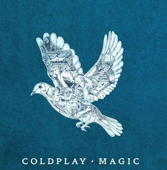
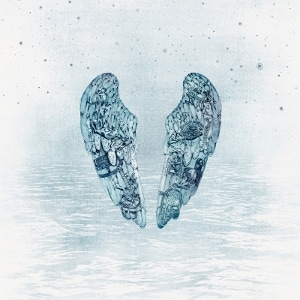

Ghost Stories: Historia
Originalmente, el quinto álbum de Coldplay, Mylo Xyloto, iba a tener un sonido más acústico, sin embargo terminó siendo dominado por géneros electrónicos. La idea de hacer un disco basado en sus inicios no quedó descartada del todo. Tras terminar la gira Mylo Xyloto Tour la banda decidió comenzar este proyecto. Entre 2013 y principios de 2014 la banda grabó en sus estudios en Londres. Finalmente el grupo se trasladó a Los Angeles, donde continuarían con el proceso final.
El enfoque para la grabación de Ghost Stories fue nuevo para la banda. Como líder del grupo, Chris Martin era el que idealizaba las canciones y las iba creando a su gusto. En esta ocasión toda la banda creo las canciones según su conveniencia. Por ejemplo, Magic, el primer sencillo del álbum, presenta un riff de bajo que fue totalmente concebido por el bajista Guy Berryman.
Durante las grabaciones, Chris Martin estaba pasando por un momento complicado en su relación con la actriz Gwyneth Paltrow. Esta etapa finalizó a principios de 2014 con la separación de ambos. Esta experiencia marcó el tema principal del álbum. Para Martin fue un proceso de catársis. A pesar de esto el cantante admitió que pasó por un año de depresión hasta recuperarse totalmente. Las relaciones entre ambos mejoraron al poco tiempo. Gwyneth Paltrow colaboraría más tarde en A Head Full of Dreams junto a la nueva pareja de Chris Martin.
El 25 de febrero se publicó sin previo aviso en el canal de Coldplay un video musical de un tema llamado Midnight. Antes de eso se conocían rumores de la supuesta filmación de un videoclip musical de la banda, pero no se confirmó nada hasta la salida del vídeo. Al poco tiempo se dio a conocer el tracklist y la portada del álbum.
Más tarde publicaron Magic, el segundo adelanto del álbum.

El diseño del álbum corre por parte de la artista Mila Fürstová. La artista dibujó dos alas de ángel en que añadió un collage de arte medieval en el que representa figuras de todo tipo. Todo ello bajo el fondo de un océano en mitad de la noche
Ghost Stories fue publicado el 16 de mayo de 2014. Debutó en el número uno de las listas de varios países. Vendió 3.7 millones de copias en 2014. Las opiniones por parte de los críticos fueron mixtas. Diversos medios musicales aplaudieron que la banda cambiara su rumbo hacia sonidos nuevos, además de regresar a sus primeros años. Por otra parte notaron como Ghost Stories era un álbum que parecía no ir a ninguna parte, quedando como un paso olvidable dentro de la discografía la banda, aunque algunos dijeron que era el mejor disco de la banda en años.

La promoción de Ghost Stories fue mayoritariamente basado en conciertos. A pesar de que la gira Ghost Stories Tour fue corta en comparación con las demás. Aparecieron en varios espectáculos importantes, además de grabar un DVD interpretando el material en su totalidad. El DVD fue titulado Ghost Stories Live 2014. También fue publicada una versión en CD.

Fuente: Play Feel